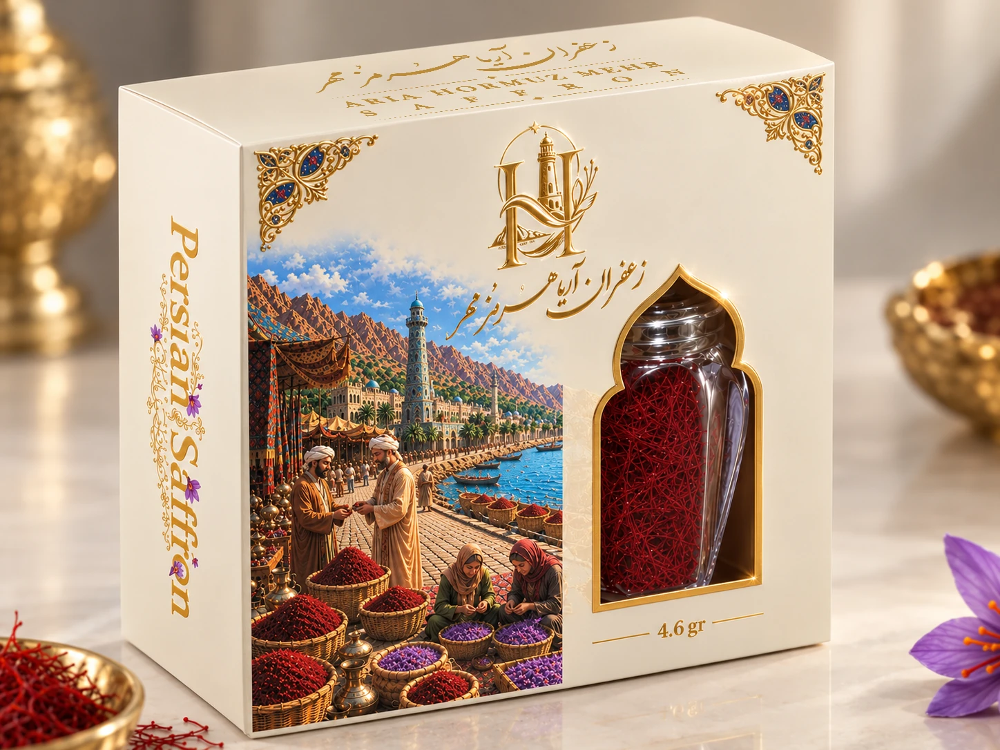
01↙زعفران لوکس یک مثقالی
انتخابی چشمگیر برای هدیه و ارائه ممتاز.
درخواست اطلاعات محصول↙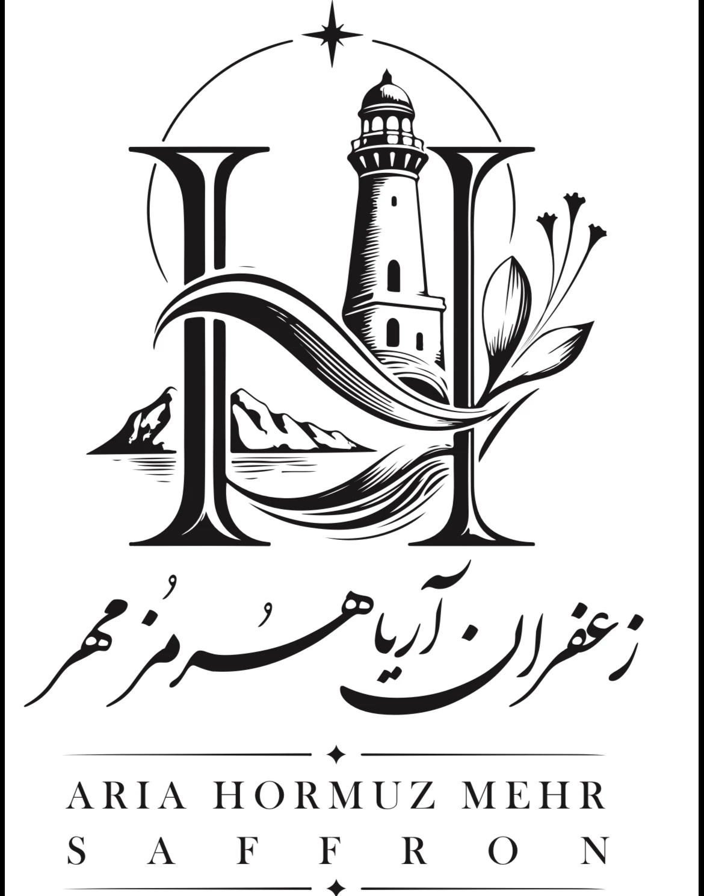
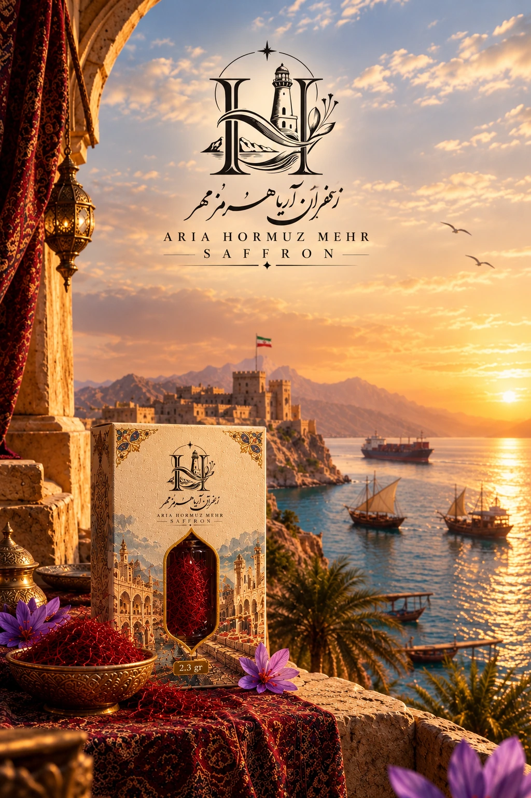
از خاک حاصلخیز ایران تا افقهای دوردست؛ زعفرانی با هویت، بستهبندی ممتاز و نگاهی جهانی.
هرمز زعفران، روایت پیوند میان محصولی ارزشمند و سرزمینی با تاریخ دریانوردی، هنر و تجارت است. ما این روایت را در انتخاب محصول، جزئیات بستهبندی و شیوه معرفی برند به بازارهای جهانی زنده نگه میداریم.
بیشتر درباره هویت ما↙از بستهبندیهای هدیهمحور و لوکس تا گزینههای کاربردی برای خردهفروشی؛ هر مجموعه با هویت بصری هماهنگ و امکان ارائه برای بازارهای گوناگون طراحی شده است.

01↙انتخابی چشمگیر برای هدیه و ارائه ممتاز.
درخواست اطلاعات محصول↙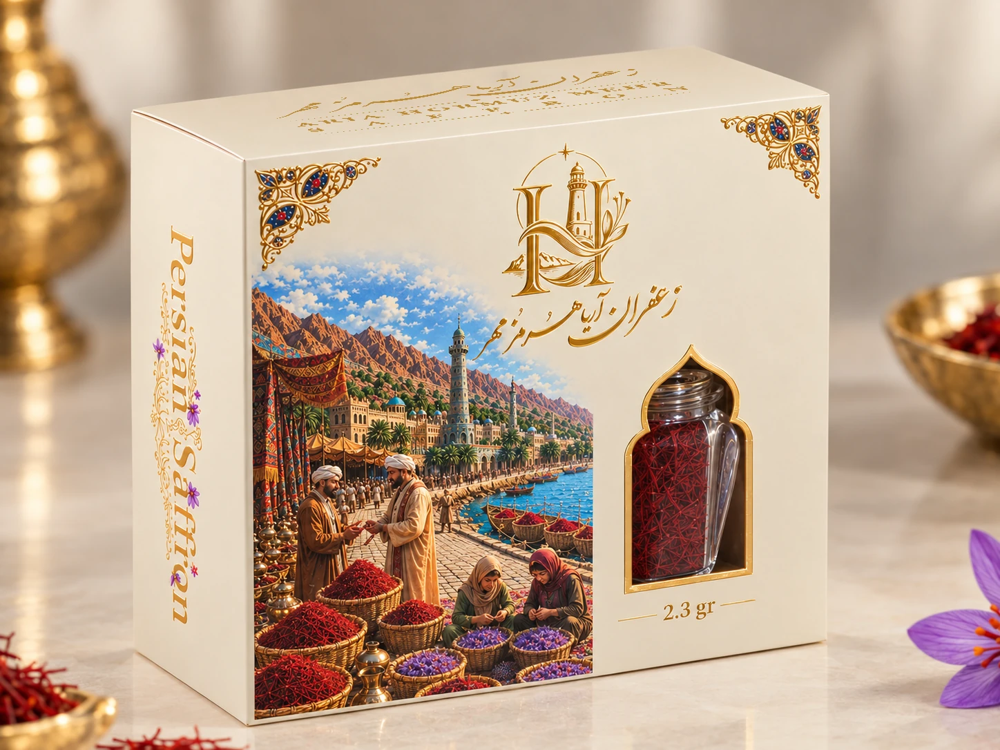
02↙اندازهای ظریف با همان زبان طراحی ممتاز.
درخواست اطلاعات محصول↙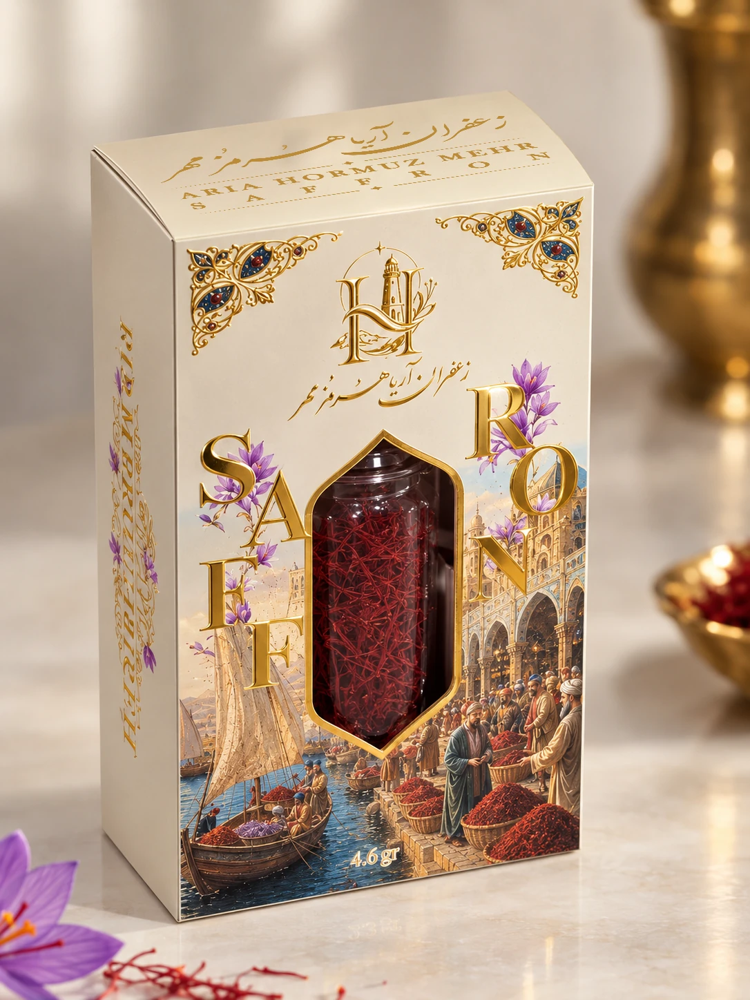
03↙ترکیبی متعادل از جلوه بصری و کاربرد روزمره.
درخواست اطلاعات محصول↙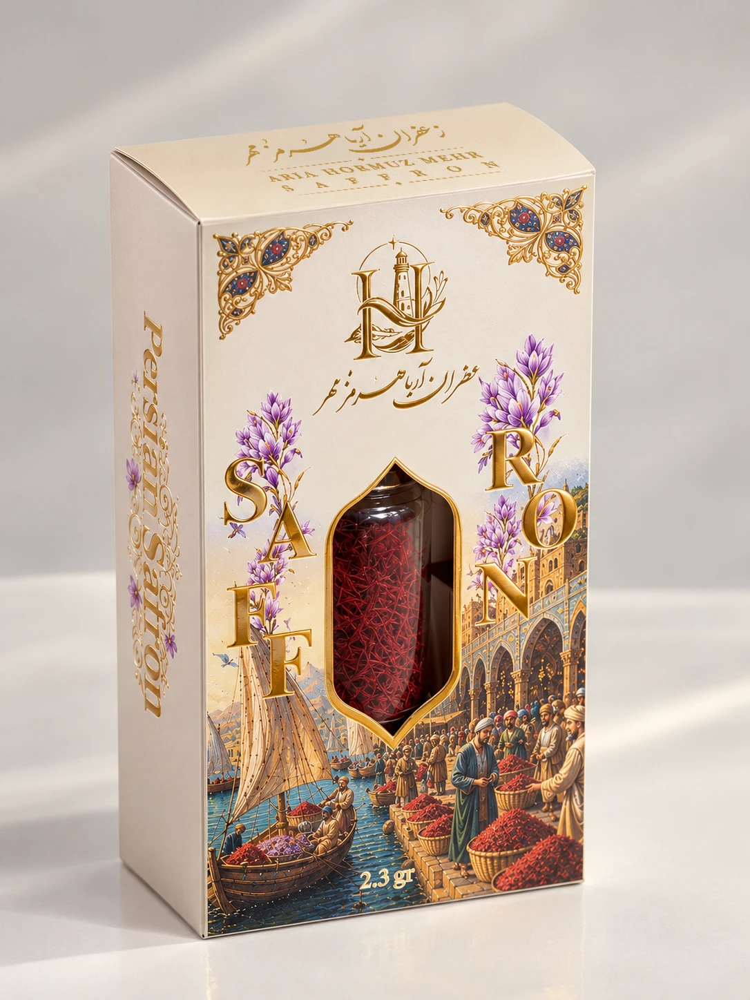
04↙فرمت جمعوجور برای انتخابهای متنوعتر.
درخواست اطلاعات محصول↙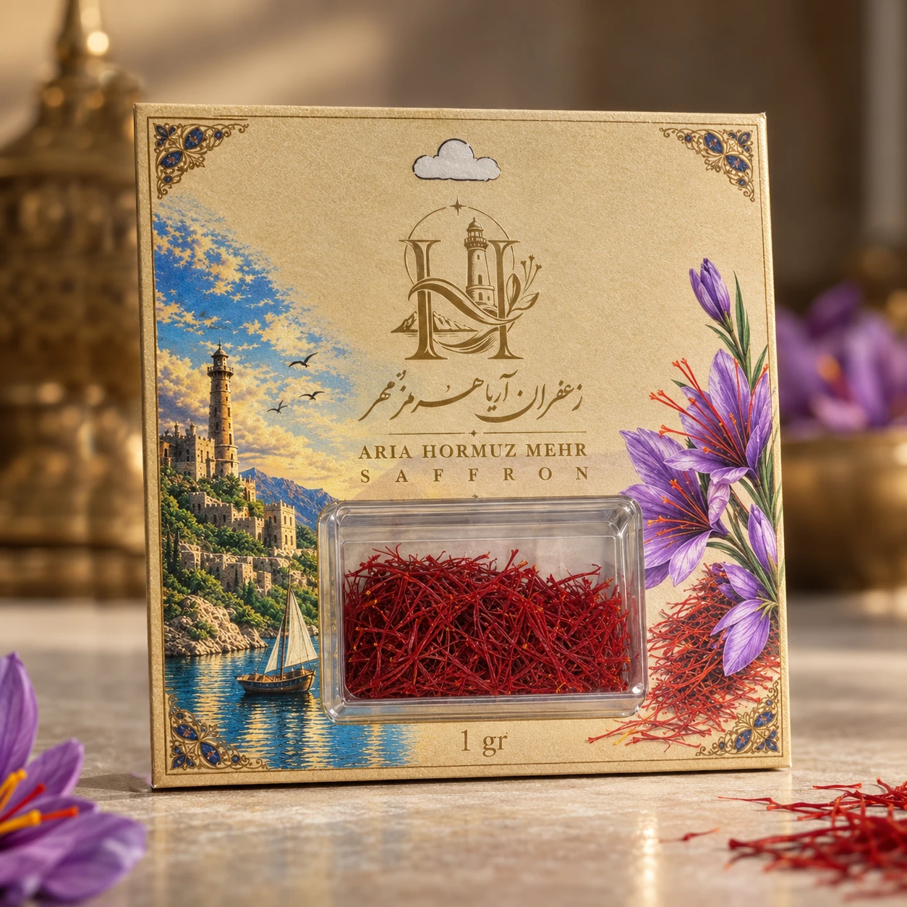
05↙بستهبندی کاربردی برای قفسههای خردهفروشی.
درخواست اطلاعات محصول↙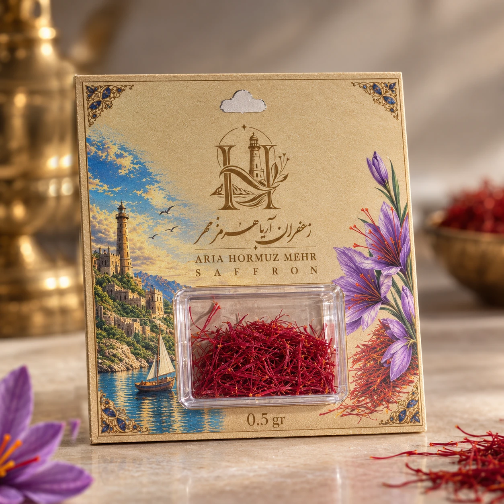
06↙اندازهای کوچک برای دسترسی آسانتر به زعفران.
درخواست اطلاعات محصول↙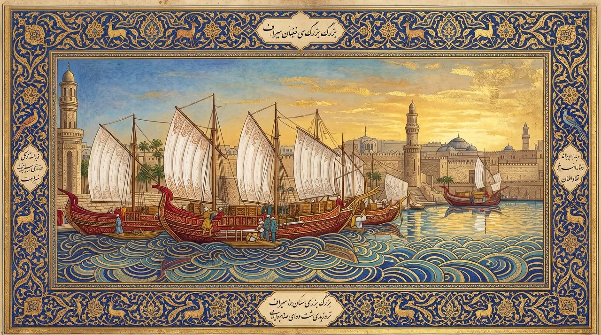
دریا، مسیر پیوند فرهنگهانام هرمز یادآور دریا، رفتوآمد بازرگانان و پیوند میان سرزمینهاست. این هویت الهامبخش نگاه ما به صادرات است: محصولی ریشهدار در ایران، با ارائهای سنجیده برای مخاطبانی در سراسر جهان.
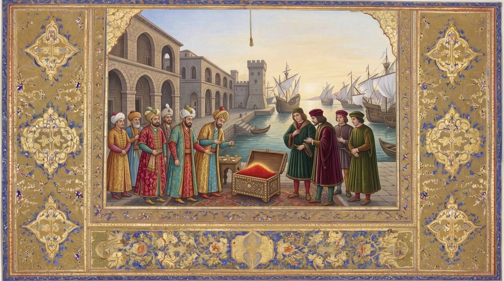
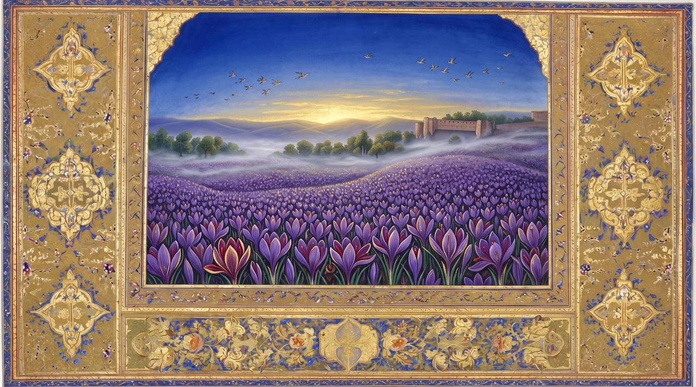
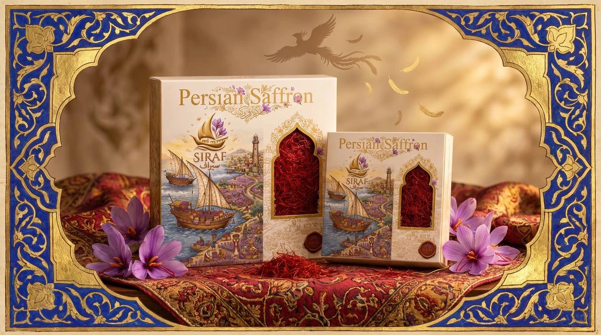
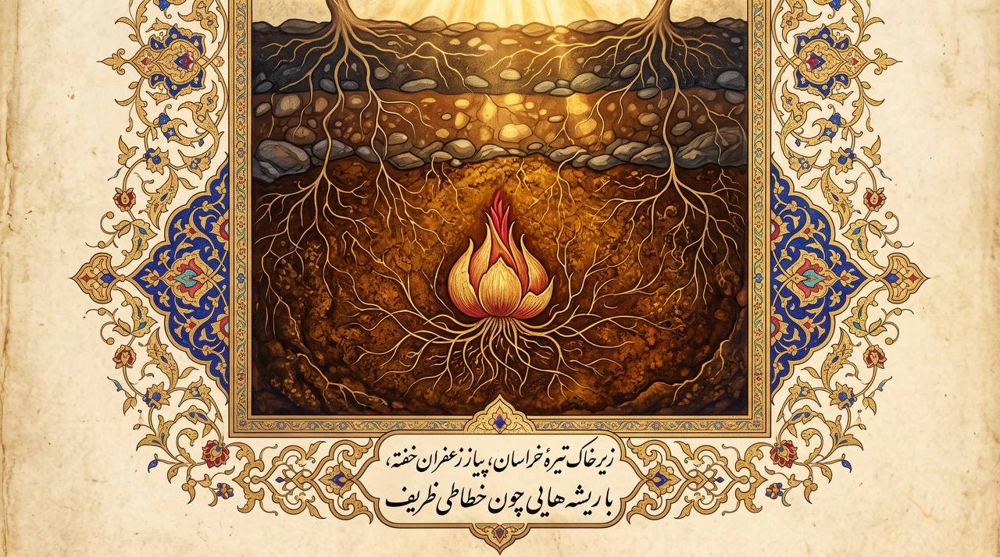
QUALITYدر تجارت زعفران، شفافیت مشخصات محصول و مستندات هر محموله اهمیت اساسی دارد. اطلاعات نهایی کیفی باید بر اساس آزمون همان بچ تولیدی و مدارک قابل ارائه تأیید شود.